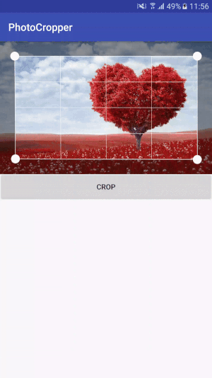

一、 前言
前段时间，应公司要求实现一个自定义相机，需要有自动对焦和图片不规则裁剪功能，其实难点主要也是这2个功能。经Google搜索，发现并没有现成的轮子。最后通过各种查找资料，自己封装了一个，效果图如下：
二、使用
Step 1. 添加JitPack仓库
在项目的build.gradle添加JitPack仓库
allprojects {
repositories {
...
maven { url "https://jitpack.io" }
}
}Step 2. 添加依赖
在需要使用的module中添加依赖（最新版本见 WildmaIDCardCamera）
dependencies {
compile 'com.github.wildma:IDCardCamera:1.0.1'
}或者引用本地lib
compile project(':idcardcamera')Step 3. 调用CameraActivity类的toCameraActivity方法打开拍照界面
CameraActivity.toCameraActivity(this, CameraActivity.TYPE_IDCARD_FRONT);Step 4. 在onActivityResult方法中获取裁剪后的图片
@Override
protected void onActivityResult(int requestCode, int resultCode, Intent data) {
if (requestCode == CameraActivity.REQUEST_CODE && resultCode == CameraActivity.RESULT_CODE) {
//获取图片路径，显示图片
final String path = CameraActivity.getImagePath(data);
if (!TextUtils.isEmpty(path)) {
imageView.setImageBitmap(BitmapFactory.decodeFile(path));
}
}
}三、功能特点
自定义相机的代码我就不重复造轮子了，网上很多，我找了个UI比较不错的项目 CertificateCamera ，然后在该项目的基础上进行功能增加的，主要增加的内容如下：
- 解决该项目拍照不成功的问题（该项目代码有问题，博主也一直没有去修改，这里帮他改过来了）
- 增加自动对焦功能
- 增加图片不规则裁剪功能
3.1 自动对焦
实现自动对焦有多种方式，这里列举下：
3.1.1 使用原生API
调用autoFocus方法，如下：
camera.autoFocus(new Camera.AutoFocusCallback() { @Override public void onAutoFocus(boolean success, Camera camera) { } });结论：不满足，大部分手机只对焦一次。
设置对焦模式，如下：
camera.getParameters().setFocusMode(Camera.Parameters.FOCUS_MODE_CONTINUOUS_PICTURE);或
camera.getParameters().setFocusMode(Camera.Parameters.FOCUS_MODE_CONTINUOUS_VIDEO);结论：不满足，不能兼容所有手机。
3.1.2 使用定时器
即使用一个定时器，每隔一段时间进行自动对焦。代码如下：
package com.wildma.idcardcamera.camera;
import android.annotation.SuppressLint;
import android.hardware.Camera;
import android.os.AsyncTask;
import android.os.Build;
import android.util.Log;
import java.util.ArrayList;
import java.util.Collection;
import java.util.concurrent.RejectedExecutionException;
public class AutoFocusManager implements Camera.AutoFocusCallback {
private static final String TAG = AutoFocusManager.class.getSimpleName();
private static final long AUTO_FOCUS_INTERVAL_MS = 2000L;
private static final Collection<String> FOCUS_MODES_CALLING_AF;
static {
FOCUS_MODES_CALLING_AF = new ArrayList<String>(2);
FOCUS_MODES_CALLING_AF.add(Camera.Parameters.FOCUS_MODE_AUTO);
FOCUS_MODES_CALLING_AF.add(Camera.Parameters.FOCUS_MODE_MACRO);
}
private final boolean useAutoFocus;
private final Camera camera;
private boolean stopped;
private boolean focusing;
private AsyncTask<?, ?, ?> outstandingTask;
public AutoFocusManager(Camera camera) {
this.camera = camera;
String currentFocusMode = camera.getParameters().getFocusMode();
useAutoFocus = FOCUS_MODES_CALLING_AF.contains(currentFocusMode);
// Log.i(TAG, "Current focus mode '" + currentFocusMode + "'; use auto focus? " + useAutoFocus);
start();
}
@Override
public synchronized void onAutoFocus(boolean success, Camera theCamera) {
focusing = false;
autoFocusAgainLater();
}
@SuppressLint("NewApi")
private synchronized void autoFocusAgainLater() {
if (!stopped && outstandingTask == null) {
AutoFocusTask newTask = new AutoFocusTask();
try {
if (Build.VERSION.SDK_INT >= 11) {
newTask.executeOnExecutor(AsyncTask.THREAD_POOL_EXECUTOR);
} else {
newTask.execute();
}
outstandingTask = newTask;
} catch (RejectedExecutionException ree) {
Log.w(TAG, "Could not request auto focus", ree);
}
}
}
public synchronized void start() {
if (useAutoFocus) {
outstandingTask = null;
if (!stopped && !focusing) {
try {
camera.autoFocus(this);
Log.w(TAG, "自动对焦");
focusing = true;
} catch (RuntimeException re) {
// Have heard RuntimeException reported in Android 4.0.x+;
// continue?
Log.w(TAG, "Unexpected exception while focusing", re);
// Try again later to keep cycle going
autoFocusAgainLater();
}
}
}
}
private synchronized void cancelOutstandingTask() {
if (outstandingTask != null) {
if (outstandingTask.getStatus() != AsyncTask.Status.FINISHED) {
outstandingTask.cancel(true);
}
outstandingTask = null;
}
}
public synchronized void stop() {
stopped = true;
if (useAutoFocus) {
cancelOutstandingTask();
// Doesn't hurt to call this even if not focusing
try {
camera.cancelAutoFocus();
} catch (RuntimeException re) {
// Have heard RuntimeException reported in Android 4.0.x+;
// continue?
Log.w(TAG, "Unexpected exception while cancelling focusing", re);
}
}
}
private final class AutoFocusTask extends AsyncTask<Object, Object, Object> {
@Override
protected Object doInBackground(Object... voids) {
try {
Thread.sleep(AUTO_FOCUS_INTERVAL_MS);
} catch (InterruptedException e) {
}
start();
return null;
}
}
}
结论：虽然可以实现，但是你对比下手机自带的相机，发现并不是每隔一段时间进行自动对焦的，都是通过移动手机后才自动对焦的，所以这种方式是不合理的。
3.1.3 使用传感器
即根据传感器来判断手机的运动状态，如果手机从静止状态变成运行状态后再次进入静止状态，此时就是手机的对焦时机。代码如下：
package com.wildma.idcardcamera.camera;
import android.app.Activity;
import android.content.Context;
import android.hardware.Sensor;
import android.hardware.SensorEvent;
import android.hardware.SensorEventListener;
import android.hardware.SensorManager;
import android.util.Log;
import java.util.Calendar;
public class SensorControler implements SensorEventListener {
public static final String TAG = "SensorControler";
private SensorManager mSensorManager;
private Sensor mSensor;
private int mX, mY, mZ;
private long lastStaticStamp = 0;
Calendar mCalendar;
public static final int DELEY_DURATION = 500;
private static SensorControler mInstance;
private int foucsing = 1; //1 表示没有被锁定 0表示被锁定
boolean isFocusing = false;
boolean canFocusIn = false; //内部是否能够对焦控制机制
boolean canFocus = false;
public static final int STATUS_NONE = 0;
public static final int STATUS_STATIC = 1;
public static final int STATUS_MOVE = 2;
private int STATUE = STATUS_NONE;
private SensorControler(Context context) {
mSensorManager = (SensorManager) context.getSystemService(Activity.SENSOR_SERVICE);
mSensor = mSensorManager.getDefaultSensor(Sensor.TYPE_ACCELEROMETER);// TYPE_GRAVITY
}
public static SensorControler getInstance(Context context) {
if (mInstance == null) {
mInstance = new SensorControler(context);
}
return mInstance;
}
public void onStart() {
restParams();
canFocus = true;
mSensorManager.registerListener(this, mSensor,
SensorManager.SENSOR_DELAY_NORMAL);
}
public void onStop() {
mSensorManager.unregisterListener(this, mSensor);
canFocus = false;
}
@Override
public void onAccuracyChanged(Sensor sensor, int accuracy) {
}
@Override
public void onSensorChanged(SensorEvent event) {
if (event.sensor == null) {
return;
}
if (isFocusing) {
restParams();
return;
}
if (event.sensor.getType() == Sensor.TYPE_ACCELEROMETER) {
int x = (int) event.values[0];
int y = (int) event.values[1];
int z = (int) event.values[2];
mCalendar = Calendar.getInstance();
long stamp = mCalendar.getTimeInMillis();// 1393844912
int second = mCalendar.get(Calendar.SECOND);// 53
if (STATUE != STATUS_NONE) {
int px = Math.abs(mX - x);
int py = Math.abs(mY - y);
int pz = Math.abs(mZ - z);
// Log.d(TAG, "pX:" + px + " pY:" + py + " pZ:" + pz + " stamp:"
// + stamp + " second:" + second);
double value = Math.sqrt(px * px + py * py + pz * pz);
if (value > 1.4) {
// textviewF.setText("检测手机在移动..");
// Log.i(TAG,"mobile moving");
STATUE = STATUS_MOVE;
} else {
// textviewF.setText("检测手机静止..");
// Log.i(TAG,"mobile static");
//上一次状态是move，记录静态时间点
if (STATUE == STATUS_MOVE) {
lastStaticStamp = stamp;
canFocusIn = true;
}
if (canFocusIn) {
if (stamp - lastStaticStamp > DELEY_DURATION) {
//移动后静止一段时间，可以发生对焦行为
if (!isFocusing) {
canFocusIn = false;
// onCameraFocus();
if (mCameraFocusListener != null) {
mCameraFocusListener.onFocus();
}
// Log.i(TAG,"mobile focusing");
}
}
}
STATUE = STATUS_STATIC;
}
} else {
lastStaticStamp = stamp;
STATUE = STATUS_STATIC;
}
mX = x;
mY = y;
mZ = z;
}
}
/**
* 重置参数
*/
private void restParams() {
STATUE = STATUS_NONE;
canFocusIn = false;
mX = 0;
mY = 0;
mZ = 0;
}
/**
* 对焦是否被锁定
*
* @return
*/
public boolean isFocusLocked() {
if (canFocus) {
return foucsing <= 0;
}
return false;
}
/**
* 锁定对焦
*/
public void lockFocus() {
isFocusing = true;
foucsing--;
Log.i(TAG, "lockFocus");
}
/**
* 解锁对焦
*/
public void unlockFocus() {
isFocusing = false;
foucsing++;
Log.i(TAG, "unlockFocus");
}
public void restFoucs() {
foucsing = 1;
}
private CameraFocusListener mCameraFocusListener;
public interface CameraFocusListener {
void onFocus();
}
public void setCameraFocusListener(CameraFocusListener mCameraFocusListener) {
this.mCameraFocusListener = mCameraFocusListener;
}
}
结论：完美实现，只要带传感器的手机就能兼容。
3.2 图片不规则裁剪
要实现的效果如下：

由效果图可得出如下结论：
- 需要利用drawline将四个坐标点连接起来
- 需要处理触摸与拖拽事件，即随着手指的移动，坐标点跟随移动。
- 需要处理裁剪框区域内的全透明化和区域外的半透明化的效果。
- 其他等等…
也就是说需要很强的自定义View的能力和计算能力，所以想着还是找找现成的轮子吧。
经过各种Google，发现国内很难找到这种轮子，最终还是在Github上找了一个国外的，主要代码如下：
package com.wildma.idcardcamera.cropper;
import android.content.Context;
import android.graphics.Bitmap;
import android.graphics.Canvas;
import android.graphics.Color;
import android.graphics.Matrix;
import android.graphics.Paint;
import android.graphics.Path;
import android.graphics.Point;
import android.graphics.PorterDuff;
import android.graphics.PorterDuffXfermode;
import android.graphics.Rect;
import android.graphics.Region;
import android.support.annotation.Nullable;
import android.util.AttributeSet;
import android.util.Log;
import android.view.MotionEvent;
import android.view.View;
public class CropOverlayView extends View {
private int defaultMargin = 100;
private int minDistance = 100;
private int vertexSize = 30;
private int gridSize = 3;
private Bitmap bitmap;
private Point topLeft, topRight, bottomLeft, bottomRight;
private float touchDownX, touchDownY;
private CropPosition cropPosition;
private int currentWidth = 0;
private int currentHeight = 0;
private int minX, maxX, minY, maxY;
public CropOverlayView(Context context) {
super(context);
}
public CropOverlayView(Context context, @Nullable AttributeSet attrs) {
super(context, attrs);
}
public void setBitmap(Bitmap bitmap) {
this.bitmap = bitmap;
resetPoints();
invalidate();
}
@Override
protected void onDraw(Canvas canvas) {
super.onDraw(canvas);
if (getWidth() != currentWidth || getHeight() != currentHeight) {
currentWidth = getWidth();
currentHeight = getHeight();
resetPoints();
}
Log.e("stk", "canvasSize=" + getWidth() + "x" + getHeight());
drawBackground(canvas);
drawVertex(canvas);
drawEdge(canvas);
// drawGrid(canvas);//裁剪框内部线条
}
private void resetPoints() {
Log.e("stk", "resetPoints, bitmap=" + bitmap);
// 1. calculate bitmap size in new canvas
float scaleX = bitmap.getWidth() * 1.0f / getWidth();
float scaleY = bitmap.getHeight() * 1.0f / getHeight();
float maxScale = Math.max(scaleX, scaleY);
// 2. determine minX , maxX if maxScale = scaleY | minY, maxY if maxScale = scaleX
int minX = 0;
int maxX = getWidth();
int minY = 0;
int maxY = getHeight();
if (maxScale == scaleY) { // image very tall
int bitmapInCanvasWidth = (int) (bitmap.getWidth() / maxScale);
minX = (getWidth() - bitmapInCanvasWidth) / 2;
maxX = getWidth() - minX;
} else { // image very wide
int bitmapInCanvasHeight = (int) (bitmap.getHeight() / maxScale);
minY = (getHeight() - bitmapInCanvasHeight) / 2;
maxY = getHeight() - minY;
}
this.minX = minX;
this.minY = minY;
this.maxX = maxX;
this.maxY = maxY;
if (maxX - minX < defaultMargin || maxY - minY < defaultMargin)
defaultMargin = 0; // remove min
else
defaultMargin = 100;
Log.e("stk", "maxX - minX=" + (maxX - minX));
Log.e("stk", "maxY - minY=" + (maxY - minY));
topLeft = new Point(minX + defaultMargin, minY + defaultMargin);
topRight = new Point(maxX - defaultMargin, minY + defaultMargin);
bottomLeft = new Point(minX + defaultMargin, maxY - defaultMargin);
bottomRight = new Point(maxX - defaultMargin, maxY - defaultMargin);
}
@Override
protected void onMeasure(int widthMeasureSpec, int heightMeasureSpec) {
super.onMeasure(widthMeasureSpec, heightMeasureSpec);
}
private void drawBackground(Canvas canvas) {
Paint paint = new Paint();
paint.setColor(Color.parseColor("#66000000"));
paint.setStyle(Paint.Style.FILL);
Path path = new Path();
path.moveTo(topLeft.x, topLeft.y);
path.lineTo(topRight.x, topRight.y);
path.lineTo(bottomRight.x, bottomRight.y);
path.lineTo(bottomLeft.x, bottomLeft.y);
path.close();
canvas.save();
canvas.clipPath(path, Region.Op.DIFFERENCE);
canvas.drawColor(Color.parseColor("#66000000"));
canvas.restore();
}
private void drawVertex(Canvas canvas) {
Paint paint = new Paint();
paint.setColor(Color.WHITE);
paint.setStyle(Paint.Style.FILL);
canvas.drawCircle(topLeft.x, topLeft.y, vertexSize, paint);
canvas.drawCircle(topRight.x, topRight.y, vertexSize, paint);
canvas.drawCircle(bottomLeft.x, bottomLeft.y, vertexSize, paint);
canvas.drawCircle(bottomRight.x, bottomRight.y, vertexSize, paint);
Log.e("stk",
"vertextPoints=" +
topLeft.toString() + " " + topRight.toString() + " " + bottomRight.toString() + " " + bottomLeft.toString());
}
private void drawEdge(Canvas canvas) {
Paint paint = new Paint();
paint.setColor(Color.WHITE);
paint.setStrokeWidth(3);
paint.setAntiAlias(true);
canvas.drawLine(topLeft.x, topLeft.y, topRight.x, topRight.y, paint);
canvas.drawLine(topLeft.x, topLeft.y, bottomLeft.x, bottomLeft.y, paint);
canvas.drawLine(bottomRight.x, bottomRight.y, topRight.x, topRight.y, paint);
canvas.drawLine(bottomRight.x, bottomRight.y, bottomLeft.x, bottomLeft.y, paint);
}
private void drawGrid(Canvas canvas) {
Paint paint = new Paint();
paint.setColor(Color.WHITE);
paint.setStrokeWidth(2);
paint.setAntiAlias(true);
for (int i = 1; i <= gridSize; i++) {
int topDistanceX = Math.abs(topLeft.x - topRight.x) / (gridSize + 1) * i;
int topDistanceY = Math.abs((topLeft.y - topRight.y) / (gridSize + 1) * i);
Point top = new Point(
topLeft.x < topRight.x ? topLeft.x + topDistanceX : topLeft.x - topDistanceX,
topLeft.y < topRight.y ? topLeft.y + topDistanceY : topLeft.y - topDistanceY);
int bottomDistanceX = Math.abs((bottomLeft.x - bottomRight.x) / (gridSize + 1) * i);
int bottomDistanceY = Math.abs((bottomLeft.y - bottomRight.y) / (gridSize + 1) * i);
Point bottom = new Point(
bottomLeft.x < bottomRight.x ? bottomLeft.x + bottomDistanceX : bottomLeft.x - bottomDistanceX,
bottomLeft.y < bottomRight.y ? bottomLeft.y + bottomDistanceY : bottomLeft.y - bottomDistanceY);
canvas.drawLine(top.x, top.y, bottom.x, bottom.y, paint);
int leftDistanceX = Math.abs((topLeft.x - bottomLeft.x) / (gridSize + 1) * i);
int leftDistanceY = Math.abs((topLeft.y - bottomLeft.y) / (gridSize + 1) * i);
Point left = new Point(
topLeft.x < bottomLeft.x ? topLeft.x + leftDistanceX : topLeft.x - leftDistanceX,
topLeft.y < bottomLeft.y ? topLeft.y + leftDistanceY : topLeft.y - leftDistanceY);
int rightDistanceX = Math.abs((topRight.x - bottomRight.x) / (gridSize + 1) * i);
int rightDistanceY = Math.abs((topRight.y - bottomRight.y) / (gridSize + 1) * i);
Point right = new Point(
topRight.x < bottomRight.x ? topRight.x + rightDistanceX : topRight.x - rightDistanceX,
topRight.y < bottomRight.y ? topRight.y + rightDistanceY : topRight.y - rightDistanceY);
canvas.drawLine(left.x, left.y, right.x, right.y, paint);
}
}
@Override
public boolean onTouchEvent(MotionEvent event) {
switch (event.getAction()) {
case MotionEvent.ACTION_UP:
getParent().requestDisallowInterceptTouchEvent(false);
break;
case MotionEvent.ACTION_DOWN:
getParent().requestDisallowInterceptTouchEvent(false);
onActionDown(event);
return true;
case MotionEvent.ACTION_MOVE:
getParent().requestDisallowInterceptTouchEvent(true);
onActionMove(event);
return true;
}
return false;
}
private void onActionDown(MotionEvent event) {
touchDownX = event.getX();
touchDownY = event.getY();
Point touchPoint = new Point((int) event.getX(), (int) event.getY());
int minDistance = distance(touchPoint, topLeft);
cropPosition = CropPosition.TOP_LEFT;
if (minDistance > distance(touchPoint, topRight)) {
minDistance = distance(touchPoint, topRight);
cropPosition = CropPosition.TOP_RIGHT;
}
if (minDistance > distance(touchPoint, bottomLeft)) {
minDistance = distance(touchPoint, bottomLeft);
cropPosition = CropPosition.BOTTOM_LEFT;
}
if (minDistance > distance(touchPoint, bottomRight)) {
minDistance = distance(touchPoint, bottomRight);
cropPosition = CropPosition.BOTTOM_RIGHT;
}
}
private int distance(Point src, Point dst) {
return (int) Math.sqrt(Math.pow(src.x - dst.x, 2) + Math.pow(src.y - dst.y, 2));
}
private void onActionMove(MotionEvent event) {
int deltaX = (int) (event.getX() - touchDownX);
int deltaY = (int) (event.getY() - touchDownY);
switch (cropPosition) {
case TOP_LEFT:
adjustTopLeft(deltaX, deltaY);
invalidate();
break;
case TOP_RIGHT:
adjustTopRight(deltaX, deltaY);
invalidate();
break;
case BOTTOM_LEFT:
adjustBottomLeft(deltaX, deltaY);
invalidate();
break;
case BOTTOM_RIGHT:
adjustBottomRight(deltaX, deltaY);
invalidate();
break;
}
touchDownX = event.getX();
touchDownY = event.getY();
}
private void adjustTopLeft(int deltaX, int deltaY) {
int newX = topLeft.x + deltaX;
if (newX < minX)
newX = minX;
if (newX > maxX)
newX = maxX;
int newY = topLeft.y + deltaY;
if (newY < minY)
newY = minY;
if (newY > maxY)
newY = maxY;
topLeft.set(newX, newY);
}
private void adjustTopRight(int deltaX, int deltaY) {
int newX = topRight.x + deltaX;
if (newX > maxX)
newX = maxX;
if (newX < minX)
newX = minX;
int newY = topRight.y + deltaY;
if (newY < minY)
newY = minY;
if (newY > maxY)
newY = maxY;
topRight.set(newX, newY);
}
private void adjustBottomLeft(int deltaX, int deltaY) {
int newX = bottomLeft.x + deltaX;
if (newX < minX)
newX = minX;
if (newX > maxX)
newX = maxX;
int newY = bottomLeft.y + deltaY;
if (newY > maxY)
newY = maxY;
if (newY < minY)
newY = minY;
bottomLeft.set(newX, newY);
}
private void adjustBottomRight(int deltaX, int deltaY) {
int newX = bottomRight.x + deltaX;
if (newX > maxX)
newX = maxX;
if (newX < minX)
newX = minX;
int newY = bottomRight.y + deltaY;
if (newY > maxY)
newY = maxY;
if (newY < minY)
newY = minY;
bottomRight.set(newX, newY);
}
public void crop(CropListener cropListener, boolean needStretch) {
if (topLeft == null)
return;
// calculate bitmap size in new canvas
float scaleX = bitmap.getWidth() * 1.0f / getWidth();
float scaleY = bitmap.getHeight() * 1.0f / getHeight();
float maxScale = Math.max(scaleX, scaleY);
// re-calculate coordinate in original bitmap
Log.e("stk", "maxScale=" + maxScale);
Point bitmapTopLeft = new Point((int) ((topLeft.x - minX) * maxScale), (int) ((topLeft.y - minY) * maxScale));
Point bitmapTopRight = new Point((int) ((topRight.x - minX) * maxScale), (int) ((topRight.y - minY) * maxScale));
Point bitmapBottomLeft = new Point((int) ((bottomLeft.x - minX) * maxScale), (int) ((bottomLeft.y - minY) * maxScale));
Point bitmapBottomRight = new Point((int) ((bottomRight.x - minX) * maxScale), (int) ((bottomRight.y - minY) * maxScale));
Log.e("stk", "bitmapPoints="
+ bitmapTopLeft.toString() + " "
+ bitmapTopRight.toString() + " "
+ bitmapBottomRight.toString() + " "
+ bitmapBottomLeft.toString() + " ");
Bitmap output = Bitmap.createBitmap(bitmap.getWidth() + 1, bitmap.getHeight() + 1, Bitmap.Config.ARGB_8888);
Canvas canvas = new Canvas(output);
Paint paint = new Paint();
// 1. draw path
Path path = new Path();
path.moveTo(bitmapTopLeft.x, bitmapTopLeft.y);
path.lineTo(bitmapTopRight.x, bitmapTopRight.y);
path.lineTo(bitmapBottomRight.x, bitmapBottomRight.y);
path.lineTo(bitmapBottomLeft.x, bitmapBottomLeft.y);
path.close();
canvas.drawPath(path, paint);
// 2. draw original bitmap
paint.setXfermode(new PorterDuffXfermode(PorterDuff.Mode.SRC_IN));
canvas.drawBitmap(bitmap, 0, 0, paint);
// 3. cut
Rect cropRect = new Rect(
Math.min(bitmapTopLeft.x, bitmapBottomLeft.x),
Math.min(bitmapTopLeft.y, bitmapTopRight.y),
Math.max(bitmapBottomRight.x, bitmapTopRight.x),
Math.max(bitmapBottomRight.y, bitmapBottomLeft.y));
Bitmap cut = Bitmap.createBitmap(
output,
cropRect.left,
cropRect.top,
cropRect.width(),
cropRect.height()
);
if (!needStretch) {
cropListener.onFinish(cut);
} else {
// 4. re-calculate coordinate in cropRect
Point cutTopLeft = new Point();
Point cutTopRight = new Point();
Point cutBottomLeft = new Point();
Point cutBottomRight = new Point();
cutTopLeft.x = bitmapTopLeft.x > bitmapBottomLeft.x ? bitmapTopLeft.x - bitmapBottomLeft.x : 0;
cutTopLeft.y = bitmapTopLeft.y > bitmapTopRight.y ? bitmapTopLeft.y - bitmapTopRight.y : 0;
cutTopRight.x = bitmapTopRight.x > bitmapBottomRight.x ? cropRect.width() : cropRect.width() - Math.abs(bitmapBottomRight.x - bitmapTopRight.x);
cutTopRight.y = bitmapTopLeft.y > bitmapTopRight.y ? 0 : Math.abs(bitmapTopLeft.y - bitmapTopRight.y);
cutBottomLeft.x = bitmapTopLeft.x > bitmapBottomLeft.x ? 0 : Math.abs(bitmapTopLeft.x - bitmapBottomLeft.x);
cutBottomLeft.y = bitmapBottomLeft.y > bitmapBottomRight.y ? cropRect.height() : cropRect.height() - Math.abs(bitmapBottomRight.y - bitmapBottomLeft.y);
cutBottomRight.x = bitmapTopRight.x > bitmapBottomRight.x ? cropRect.width() - Math.abs(bitmapBottomRight.x - bitmapTopRight.x) : cropRect.width();
cutBottomRight.y = bitmapBottomLeft.y > bitmapBottomRight.y ? cropRect.height() - Math.abs(bitmapBottomRight.y - bitmapBottomLeft.y) : cropRect.height();
Log.e("stk", cut.getWidth() + "x" + cut.getHeight());
Log.e("stk", "cutPoints="
+ cutTopLeft.toString() + " "
+ cutTopRight.toString() + " "
+ cutBottomRight.toString() + " "
+ cutBottomLeft.toString() + " ");
float width = cut.getWidth();
float height = cut.getHeight();
float[] src = new float[]{cutTopLeft.x, cutTopLeft.y, cutTopRight.x, cutTopRight.y, cutBottomRight.x, cutBottomRight.y, cutBottomLeft.x, cutBottomLeft.y};
float[] dst = new float[]{0, 0, width, 0, width, height, 0, height};
Matrix matrix = new Matrix();
matrix.setPolyToPoly(src, 0, dst, 0, 4);
Bitmap stretch = Bitmap.createBitmap(cut.getWidth(), cut.getHeight(), Bitmap.Config.ARGB_8888);
Canvas stretchCanvas = new Canvas(stretch);
// stretchCanvas.drawBitmap(cut, matrix, null);
stretchCanvas.concat(matrix);
stretchCanvas.drawBitmapMesh(cut, WIDTH_BLOCK, HEIGHT_BLOCK, generateVertices(cut.getWidth(), cut.getHeight()), 0, null, 0, null);
cropListener.onFinish(stretch);
}
}
private int WIDTH_BLOCK = 40;
private int HEIGHT_BLOCK = 40;
private float[] generateVertices(int widthBitmap, int heightBitmap) {
float[] vertices = new float[(WIDTH_BLOCK + 1) * (HEIGHT_BLOCK + 1) * 2];
float widthBlock = (float) widthBitmap / WIDTH_BLOCK;
float heightBlock = (float) heightBitmap / HEIGHT_BLOCK;
for (int i = 0; i <= HEIGHT_BLOCK; i++)
for (int j = 0; j <= WIDTH_BLOCK; j++) {
vertices[i * ((HEIGHT_BLOCK + 1) * 2) + (j * 2)] = j * widthBlock;
vertices[i * ((HEIGHT_BLOCK + 1) * 2) + (j * 2) + 1] = i * heightBlock;
}
return vertices;
}
}github地址：WildmaIDCardCamera
参考资料：